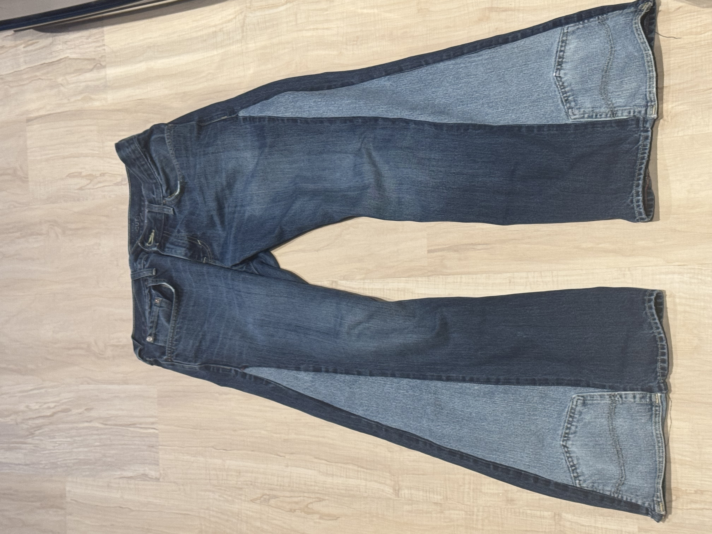

Passions

Hobbyist Automotive Mechanic
I own a BMW 128i as a project and weekend sports car. I have restored the interior, reprogrammed the ECU and transmission for performance, and modified the intake manifold + intake for improved engine airflow.
Music and Music Production
I produce beats in FL Studio and play guitar for composition, blending digital and analog techniques. I use background in signal processing and software to further my sound design skills and ability to create music.

Clothesmaking
I have repurposed scrap denim and old clothes into a pair of pants and a pair of jorts, honing skills in pattern design, stitching, and fabric selection. I find that this hobby allows me to mix both creation for functional and artistic purposes.